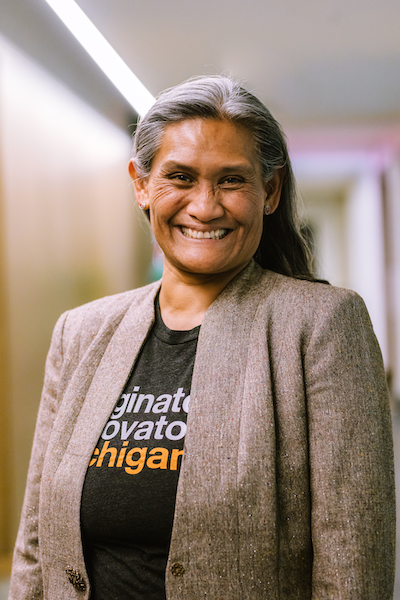

M. "Nikki" Flores
 Monica "Nikki" Flores is a Certified ScrumMaster® and Certified CPACC technical project manager at Lullabot, an employee-owned strategy, design, and development agency working on enterprise platforms for Fortune 500 brands, government agencies, higher education, publishers, and technology companies.
Since 2004, she has developed websites for clients and employers including the redesigns for the State of Iowa, New Relic, the IBM Selector Tool, Green America, the GIST Network for the U.S. Department of State, and Changemakers for Ashoka: Innovators for the Public. She has used Drupal (user: monicadear) since 2008, and served a two-year term (2022-2024) as community-elected board member to the Drupal Association.
In Michigan's Capital City, she supports the Lansing Economic Area Partnership in grantmaking and reporting on small business activity in Ingham, Eaton, and Clinton counties.
A recipient of the 2018 and 2019 NTENny Award and the 2021 FutureHack Hack for Good, Flores speaks at conferences and panels on technology, management, and entrepreneurship. Flores is a Pantheon Hero.
updated: July 24, 2024
Nikki's speaking engagements include
video playlist: https://bit.ly/monicasfloresvideos
- DrupalCon 2024
- DrupalCon 2023
- DrupalCamp NYC
- Florida DrupalCamp
- Drupal Diversity Camp
- Women in Technology World Series
- Lesbians in Tech
- NTEN
- Global Entrepreneurship Week DC
- Women in Technology Summit Southeast
- Tech Rebalanced
- Tech-I GIST Network Global Pitch Competition Bahrain
- DC Startup Week
- STEEAMnista Summit New York
- DC Startup Weekend
- Net2DC
- DC Web Women
- Working Mother DC
- Women in Technology Summit Philadelphia
- DrupalCamp Hawaii

16 April 2019 Host, Tech-I Global Pitch Competition, 12 finalists pitching for $230k in cash and prizes
Global Entrepreneurship Congress, Bahrain
Photo credit: G. Lodise

16 April 2019 Tech-I Global Pitch Competition, female founders Queenny Lopez, Thuy Huong Ngo,
Jasmine Lim, Ariuntuya Altangarel, Monica S. Flores, Heidi Nguyen, Oghenetijiri Emuveyan
Global Entrepreneurship Congress, Bahrain
Photo credit: G. Lodise
My personal mission is to make a measurable positive difference in the world.